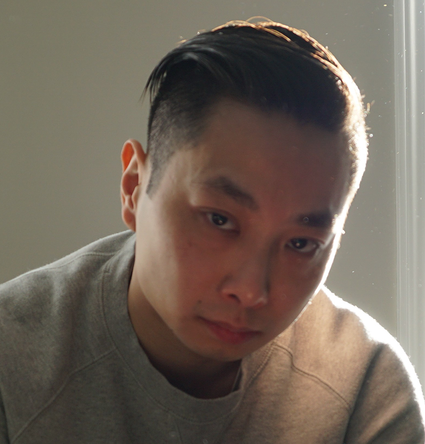

Design systems that can evolve.
Enterprise commerce architecture, service boundaries, integration patterns, modernization paths, and reliability improvements—grounded in what a delivery team can actually support.
Technical architect · Hands-on builder
I’m Danny Luu. I turn complicated systems into clear technical direction, useful products, and momentum that engineering teams can feel.

How I work
I work where systems, people, and delivery meet. The goal is not architecture for its own sake—it is software that teams can understand, operate, and improve.
Find the real constraint. Get past symptoms and design around the problem that actually limits progress.
Make decisions visible. Clear diagrams, trade-offs, and boundaries turn a plan into something a team can own.
Stay close to the build. Good technical direction survives contact with code, operations, and the people doing the work.
What I bring
My day job is technical architecture. The same curiosity also shows up in product experiments, 3D design, electronics, video, and movement.
Enterprise commerce architecture, service boundaries, integration patterns, modernization paths, and reliability improvements—grounded in what a delivery team can actually support.
Design reviews, mentoring, technical standards, and pragmatic guidance that build shared ownership instead of bottlenecks.
Translate an idea into workflows, interfaces, and an implementation path people can use.
3D modelling, printing, electronics, and home automation keep experimentation tangible.
Video and visual communication help ideas land—and gymnastics and fitness keep the practice of learning honest.
Project lab
A living shelf for selected work. Some projects can become full case studies; others will remain concise to respect client and team confidentiality.
Turning commerce requirements, integrations, and operational constraints into a modernization path teams can deliver in stages.
Exploring marketplace workflows, useful automation, and the engineering needed to move an idea from sketch to dependable product.
Prototypes that combine digital modelling, practical fabrication, electronics, and connected-home experiments.
Short, useful write-ups on architecture decisions, delivery lessons, builds, and experiments—published only when there is something real to share.
Professional snapshot
Enough context to understand how I contribute, without turning a personal site into a map of my daily life.
Previous roles span senior software development, commerce implementations, integration work, and operational tooling. Client names, timelines, and internal systems stay private.
Toolkit
I choose them for fit, longevity, and the team that will live with the result.
Connect
GitHub is the best public doorway into what I’m exploring and building.